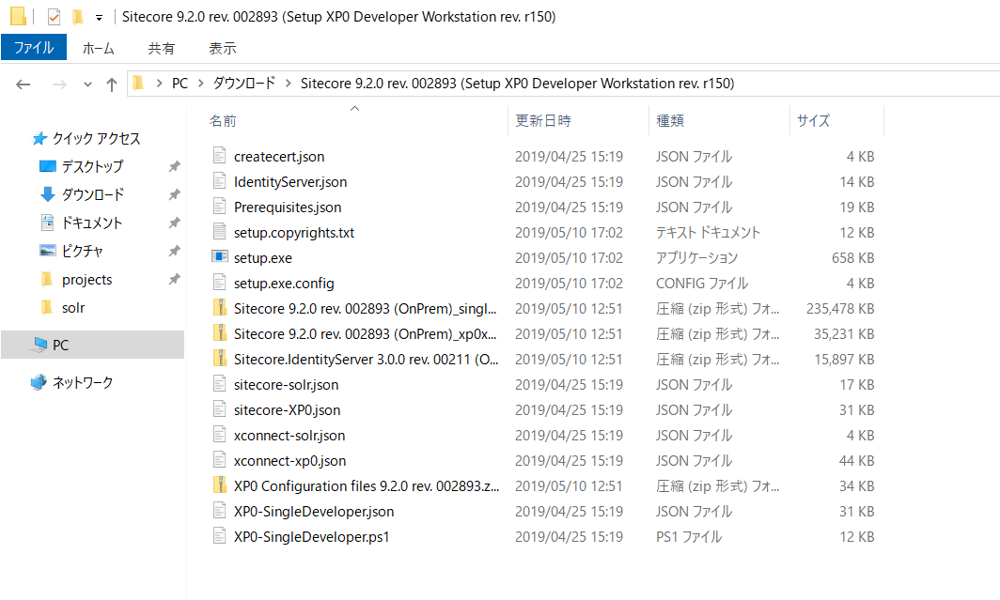
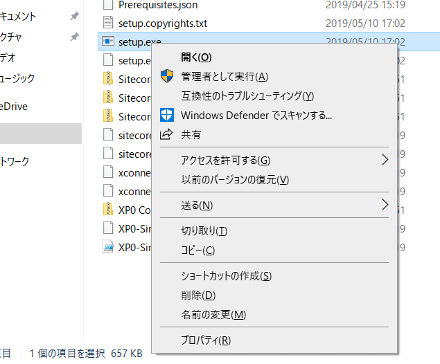
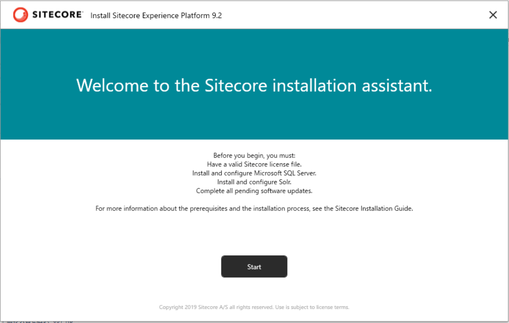
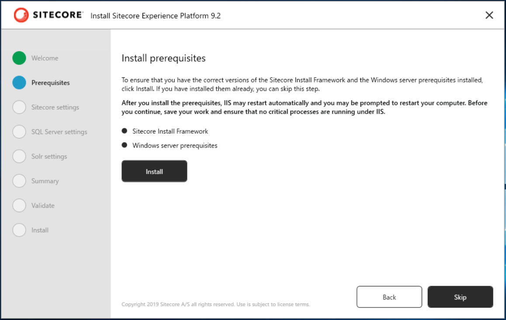
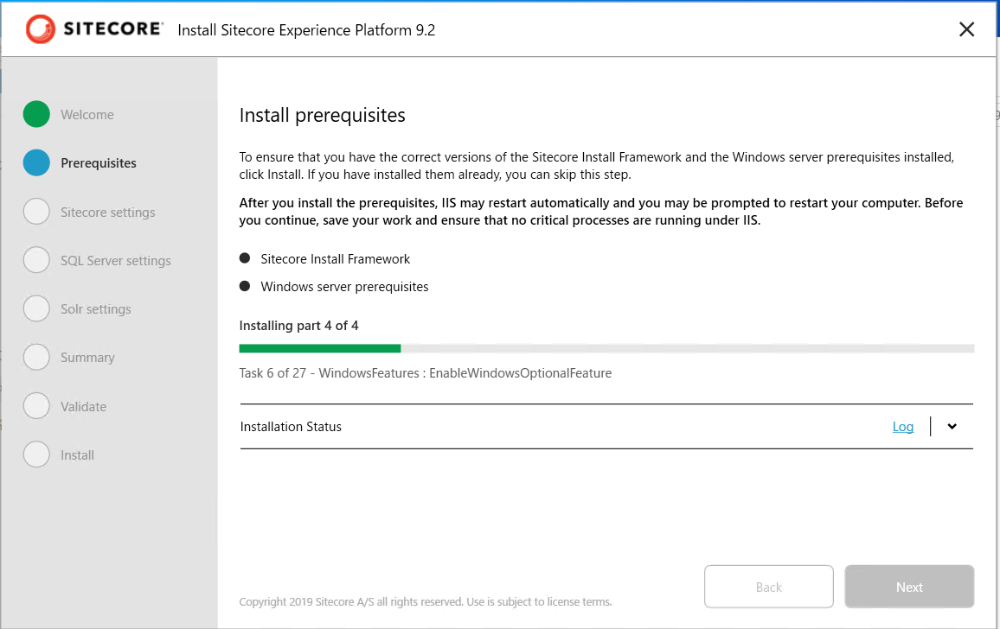
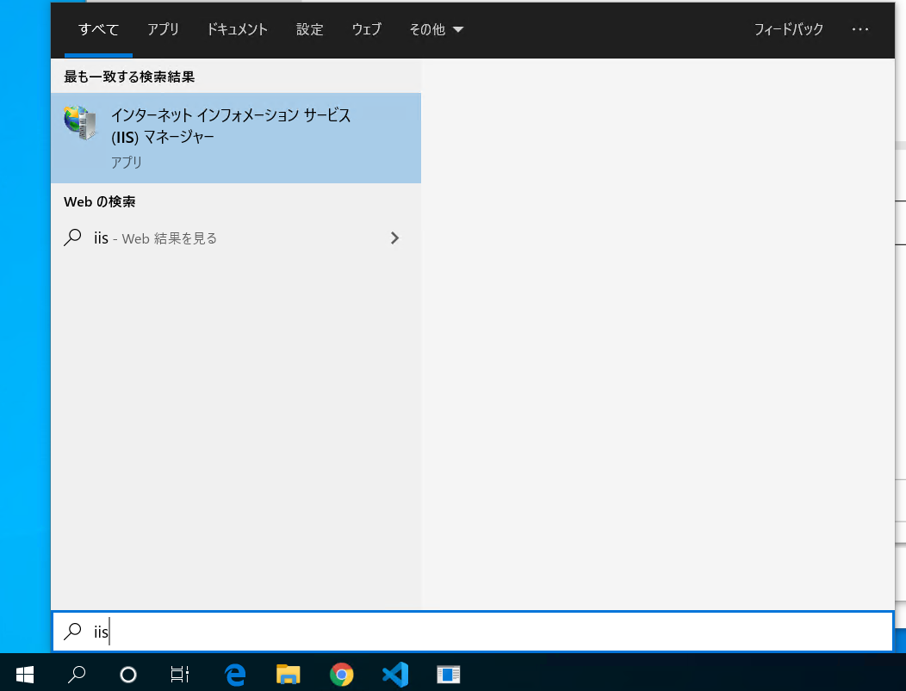
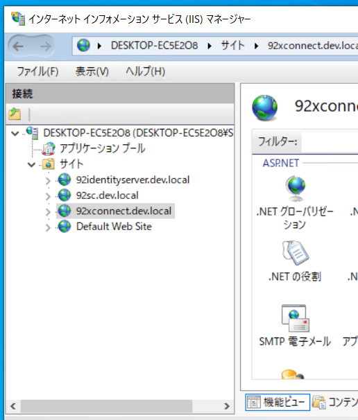
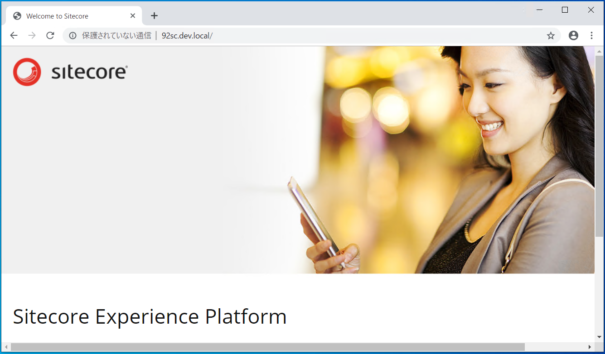
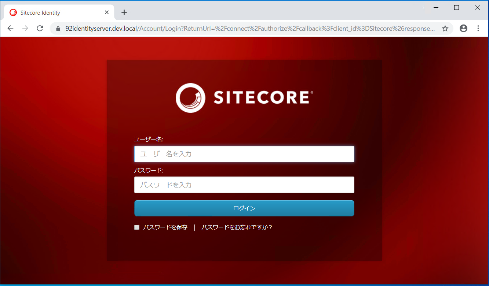

1.4. Sitecore Experience Platform のインストール¶
Sitecore 9.2 以降では Sitecore Instllation Assistant というインストール支援ツールの提供を開始しました。これにより、必要なモジュールのダウンロードなど全てツールが展開をするため、簡単にインストールをすることができるようになりました。
ここでは、すでに SQL Server 2017, Solr 7.5 がインストールされていることを前提として、このツールを利用してインストールを進めていきます。
1.4.1. Sitecore のインストールプログラムの入手¶
今回は Sitecore Install Assistant を利用してインストールを進めていきます。このため、以下の Web サイトからインストールファイルをダウンロードしてください。
Download options for On Premises deployment のグループにある Graphical setup package for XP Single をダウンロードしてください。インストールファイルのダウンロードが完了した、ファイルを展開して次のステップに進みます。
1.4.2. モジュールのダウンロード¶
この手順に関しては、１つの環境で初回のみ実行してください。すでに Sitecore をインストールしている環境の場合は、モジュールはインストールしてあるため、スキップしてください。
Sitecore Install Assistant を立ち上げます。これはダウンロードをしたファイルを展開してください。
setup.exe を右クリックして、管理者としてをします。
インストーラーが立ち上がると以下のような画面となります。
Start のボタンをクリックすると、モジュールのインストール画面になります。
Install のボタンをクリックして、必要なモジュールをインストールしてください。
インストールが完了すると、Next のボタンが有効になります。

1.4.3. インストールの開始¶
モジュールのインストールが完了すると、次は Sitecore のインストールとなります。
1.4.3.1. Sitecore Settings¶
インストールをする際の設定を記載します。以下の項目を入力してください。以下の値は例となります。
パラメータ |
入力値 |
説明 |
|---|---|---|
Installation/Solution prefix |
92 |
DB 名、サイト名で利用 |
Sitecore admin password |
管理者のパスワードの設定 |
|
Sitecore license file |
license.xml へのパス |
ライセンスファイル |

1.4.3.2. SQL Server settings¶
続いてインストールをしている SQL Server に関する設定を入力します。
パラメータ |
力値 |
説明 |
|---|---|---|
SQL Server instance |
(local) |
サーバーのインスタンス名 |
SQL Server admin user name |
sa |
管理者ユーザー名 |
SQL Server admin password |
管理者パスワード |
1.4.3.3. Solr の設定¶
すでにインストールしている Solr の設定を入力していきます。ここでは、[Solr 7.5 のインストール](./solr.md) でインストールしているパラメータを利用しています。
パラメータ |
入力値 |
説明 |
|---|---|---|
Solr service URL |
Solr の URL |
|
Solr file system root |
C:solrsolr-7.5.0 |
Solr インストール先のディレクトリ |
Solr Windows service name |
Solr-7.5.0 |
サービスの名前 |


{kind=link}
{kind=link}
{kind=link}
{kind=link}
{kind=link}
{kind=link}
{kind=link}
1.4.4. インスタンスの確認¶
インストールをした Sitecore のインスタンスを確認します。検索ボックスで IIS と入力すると、以下のように管理ツールが表示されます。
{kind=link}
サイトの一覧を確認します。
{kind=link}
今回の設定の場合、3つの Web サイトが立ち上がっています。
サイト名 |
サイトの役割 |
|---|---|
92sc.dev.local |
コンテンツ管理サーバー |
92identityserver.dev.local |
認証サーバー |
92xconnect.dev.local |
xConnect サーバー |
まずはコンテンツ管理サーバーにアクセスをします。ブラウザで http://92sc.dev.local にアクセスをしてください。初回起動は若干時間がかかりますので、待ちましょう。
{kind=link}
管理者でログインをすることができるか確認をします。ログインをする際には、コンテンツ管理サーバーに対して /sitecore の URL を追加するとログインの画面に遷移します。
{kind=link}
管理者のアカウントは Admin 、パスワードはインストーラーで設定したパスワードを指定してログインをします。ログインをしてスタート画面が出たら、インストールは完了で全ての機能を利用することができます。

標準では英語の管理画面となるため、次のステップで日本語の管理画面、日本語のサイトの追加を進めます。